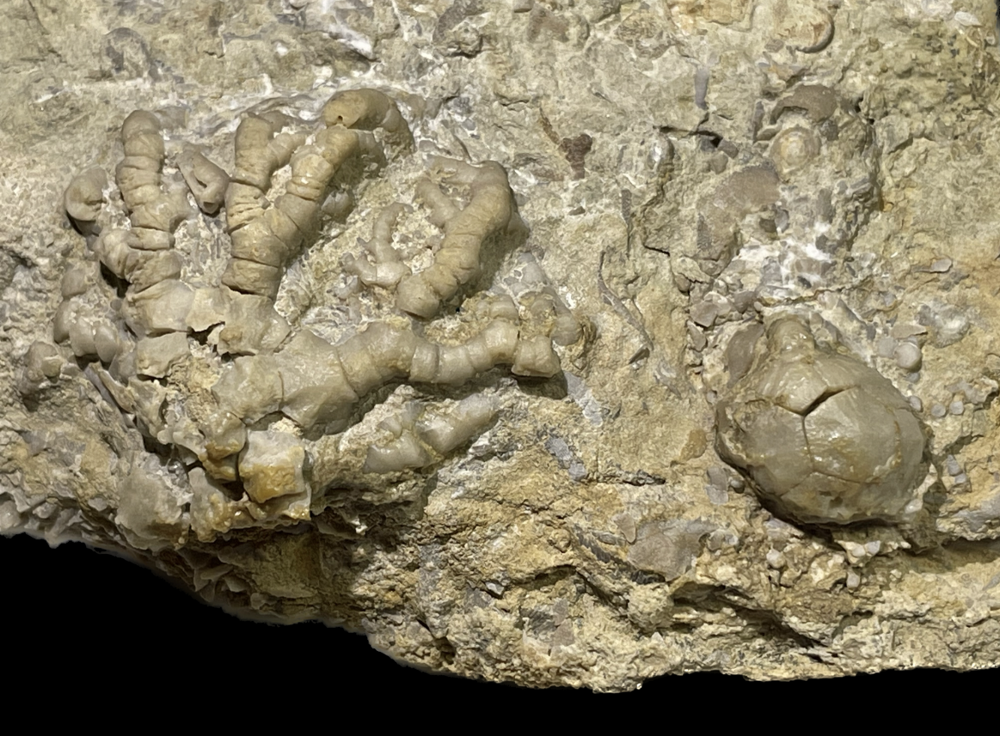
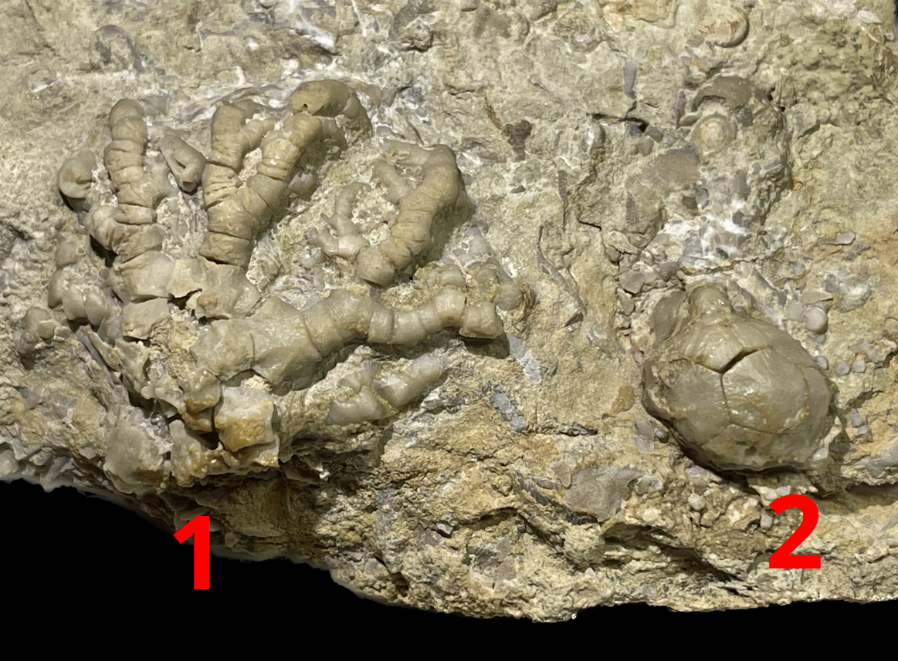

HOME
1. Dendrocrinus villosus
2. Paleocrinus hudsoni
• Ordovician
• Bromide Formation-Mountain Lake Member
• Johnston County, Oklahoma, USA
Size: 4 cm across the arms for the
Dendrocrinus

Copyright © 2024 by Samuel Kim, all rights reserved